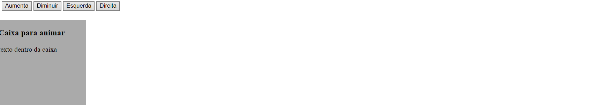
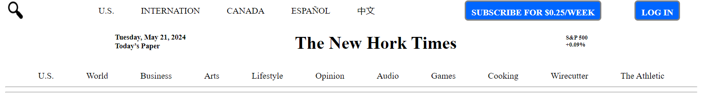
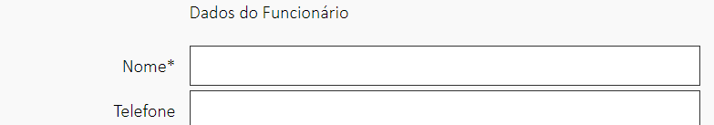

Trabalho sobre animação em jquery:
Esse trabalho foi passado em sala de aula pelo professor Maicol, o intuito desse trabalho era mostra como programa botões para dar funções para a caixa assim podendo animar essa caixa.

Trabalho New Hork Times:
Passado pelo professor Eduardo feito em sala, esse trabalho foi feito em duplas e o objetivo era fazer uma copia do layout do New Hork Times.

Exemplo de formulário:
Esse projeto foi feito em aula como exemplo pelo professor Luis Alfredo, o propósito era mostra como fazer um formulário é mostra como programa o js.
Chat por conectar ao servidor MQTT:
Esse trabalho foi feito em sala juntamente com o professor Maicol, a finalidade desse exercício era mostra como fazer um chat privado pelo servidor e a porta pelo MQTT
Jogo click:
Bem esse foi um trabalho solo meu, que teve base em jogos clicks, bem o objetivo era fazer um mais eu não cheguei a termina o js, mais tirando isso o chat está ponto, e bem a única que acontece nesse jogo são as mensagens mudando.
Copiá de Youtube:
Bem esse trabalho foi uma tarefa pelo professor Eduardo, a tarefa era escolhe um site e fazer o layout desse site, feito em duplas
Feito por: Guilherme Da Silva Alves e Gabriel De Lima Vicente